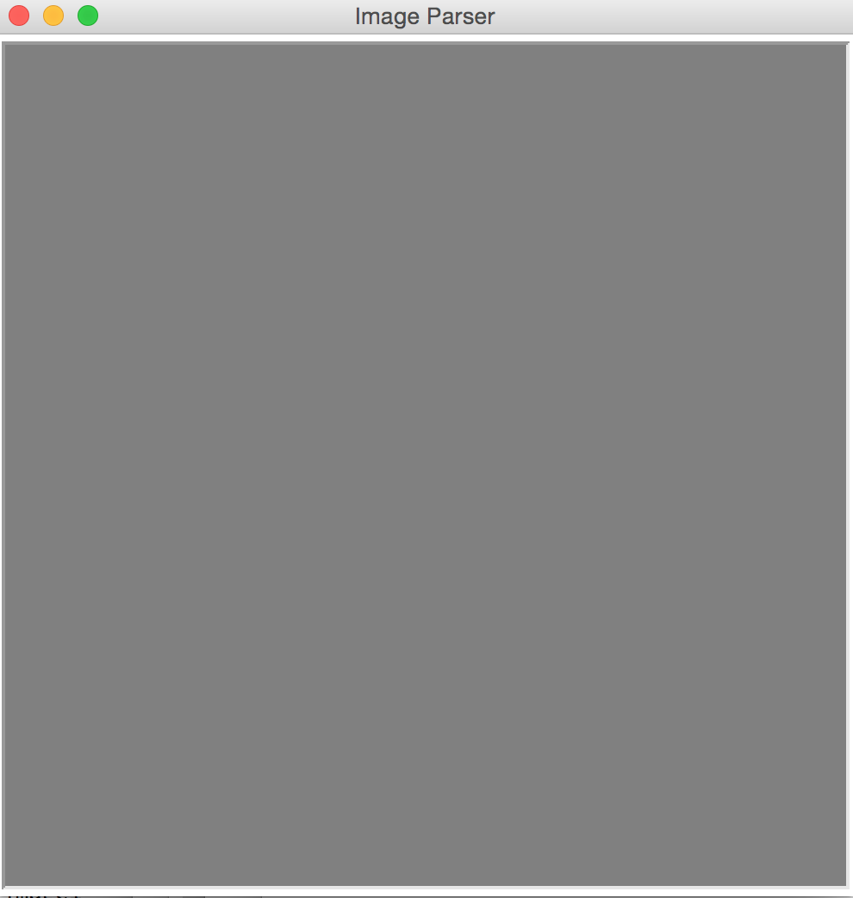
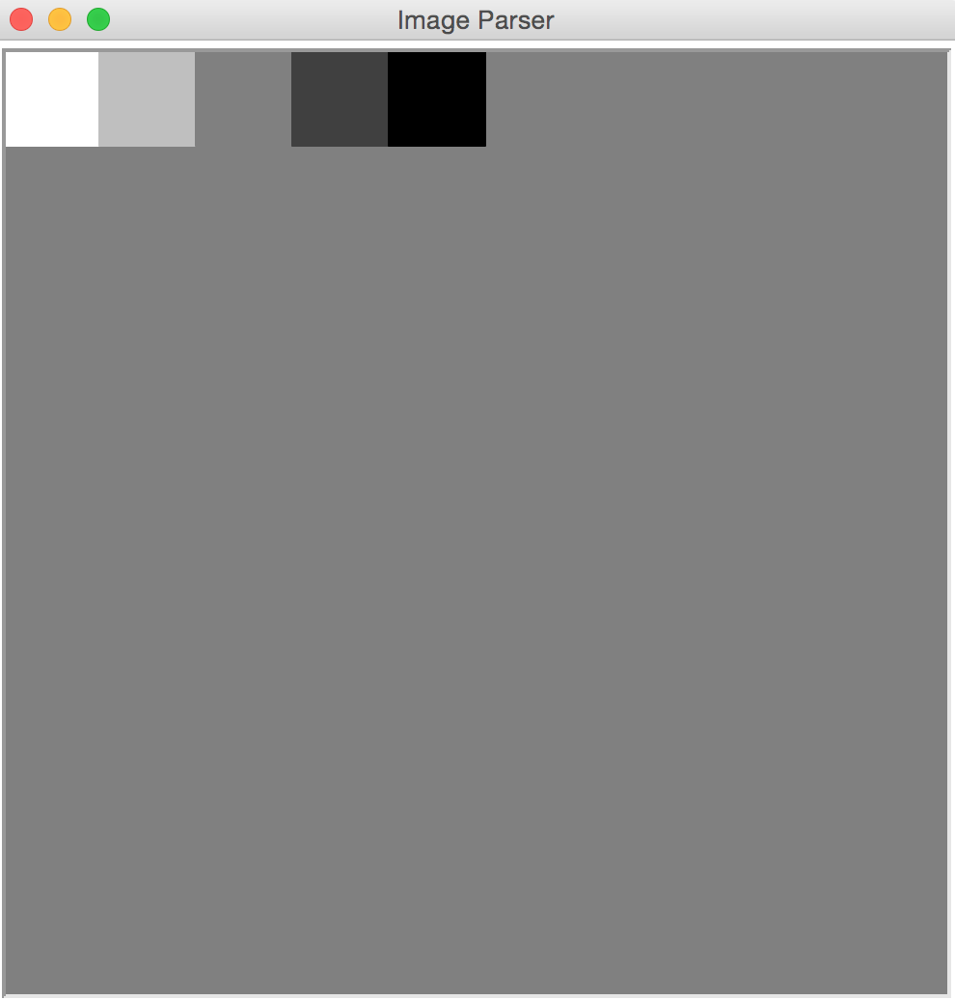
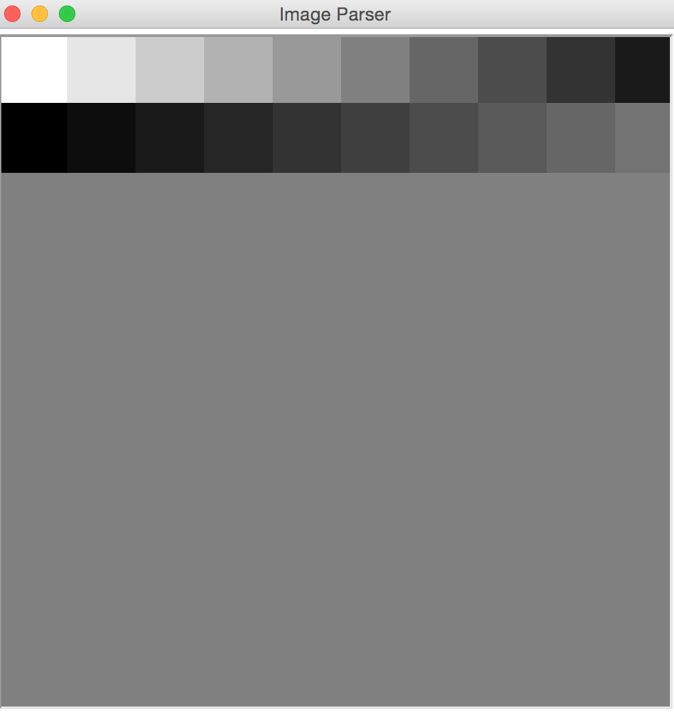
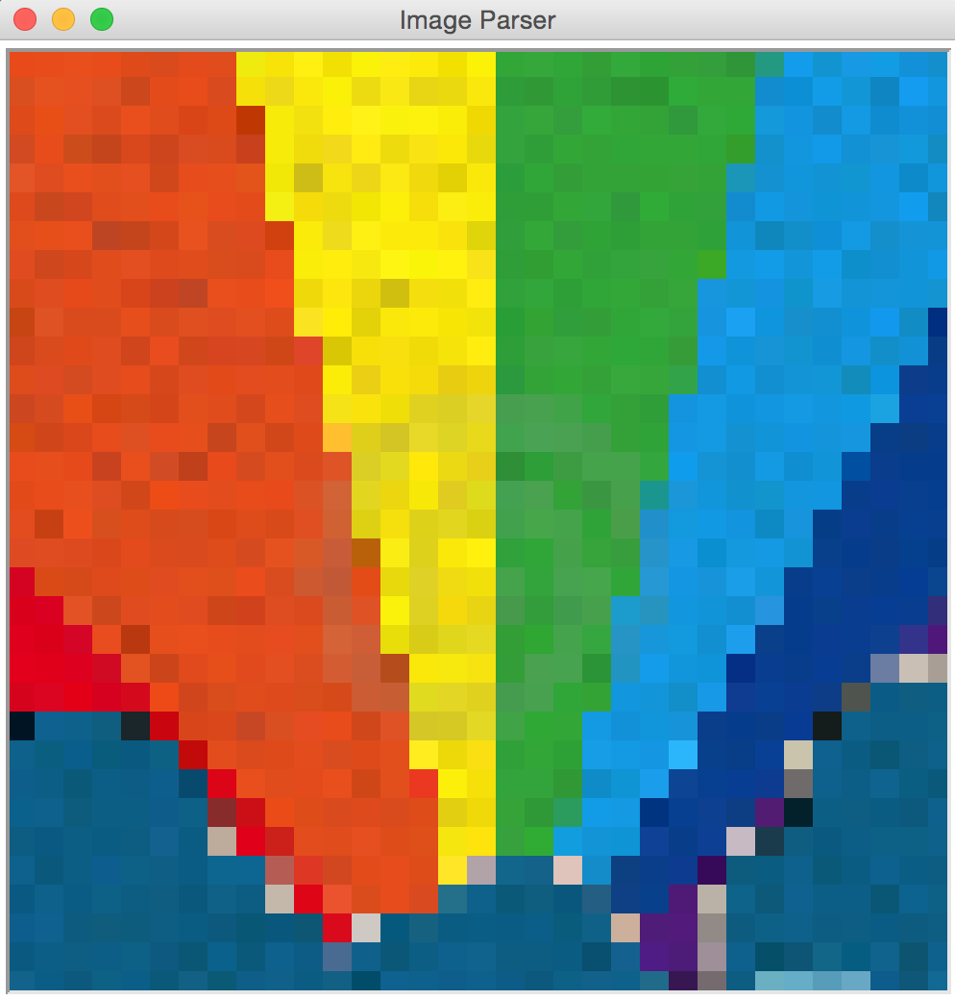

This program relies on a series of data files. Simply right-click on the links below (control-click on a Mac) and select Save-As to save these files to your computer. Ensure that these files are stored in a folder that contains your source code file (i.e. 'LastnameFirstname_assign9_part1.py') for this project as well.
You've been hired by NYU's Computer Science department to create a tool that will allow professors to look up their course rosters online. Currently course registration data is stored using two different text files.
Stores the course ID and the title of each course. There will always be one record in this file for every course that the CS department is currently offering. Here's what this file looks like:
CS0002,Introduction to Computer Programming CS0004,Introduction to Web Design and Computer Principles CS0060,Database Design and Implementation CS0061,Web Development CS0101,Introduction to Computer Science CS0102,Data Structures CS0201,Computer Systems Organization CS0380,Special Topics in Computer Science
Stores the course ID, last name and first name of each student enrolled in the course. Note that there are multiple records per course (one per student enrolled). For example, here's the beginning of this file showing six students enrolled in CS0002:
CS0002,Hiner,Judith CS0002,Mcmahon,Ludivina CS0002,Trusty,Beatrice CS0002,Brinn,Jacqulyn CS0002,Hintzen,Floria CS0002,Amyx,Randolph
Your task is to write a program that asks the user for a course ID. The program will then determine if the course ID is valid or not -- if it is not, the program can safely end. If it is valid, the program should report the full title of the course, how many students are enrolled in the course and the names of each student enrolled.
You cannot hard code your program to only work with the values contained within these files. When we test your work we will be using completely different data files that are organized in the same way as these sample files. Your program should work flawlessly using this new data.
Here are a few sample runnings of how this program should operate (user input is underlined):
NYU Computer Science Registration System Enter a course ID (i.e. CS0002, CS0004): PIKACHU Cannot find this course
NYU Computer Science Registration System Enter a course ID (i.e. CS0002, CS0004): CS0002 The title of this class is: Introduction to Computer Programming The course has 6 students enrolled * Hiner,Judith * Mcmahon,Ludivina * Trusty,Beatrice * Brinn,Jacqulyn * Hintzen,Floria * Amyx,Randolph
NYU Computer Science Registration System Enter a course ID (i.e. CS0002, CS0004): CS0004 The title of this class is: Introduction to Web Design and Computer Principles The course has 7 students enrolled * Woodman,Tilda * Schneiderman,Saran * Conn,Glayds * Cales,Edgar * Hiner,Judith * Lukens,Refugio * Alfrey,Jerrica
NYU Computer Science Registration System Enter a course ID (i.e. CS0002, CS0004): CS0201 The title of this class is: Computer Systems Organization The course has 0 students enrolled
Some hints to get you started:
This program should be named as follows: LastNameFirstName_assign9_part1.py
Note that the programs you will be writing build on one another. You will want to attempt these parts in order. You can also feel free to save all of your work in one big file (call it "LastNameFirstName_assign9_part2.py")
You have just been hired by a tech startup that is planning on releasing a new e-mail service to its clients. They have asked you to create a prototype of this service using your Python skills. The final version of this prototype should do the following:
In order to do this the software engineers at the company have outlined a series of functions that will need to be build to create the prototype. Your job is to build these functions and test them as you go - don't skip ahead! When all of the necessary functions are built you will use them to construct the prototype e-mail system
Begin by writing functions that conform to the following IPO specifications. Tester code is listed below each function.
# function: valid_username
# input: a username (string)
# processing: determines if the username supplied is valid. for the purpose
# of this program a valid username is defined as follows:
# (1) must be 5 characters or longer
# (2) must be alphanumeric (only letters or numbers)
# (3) the first character cannot be a number
# output: boolean (True if valid, False if invalid)
# TESTER CODE
print( valid_username('abc123') ) # True
print( valid_username('abcde') ) # True
print( valid_username('abc') ) # False
print( valid_username('@#$%^') ) # False
print( valid_username('1abcde') ) # False
print( valid_username('') ) # False
# function: valid_password
# input: a password (string)
# processing: determines if the password supplied is valid. for the purpose
# of this program a valid password is defined as follows:
# (1) must be 5 characters or longer
# (2) must be alphanumeric (only letters or numbers)
# (3) must contain at least one lowercase letter
# (4) must contain at least one uppercase letter
# (5) must contain at least one number
# output: boolean (True if valid, False if invalid)
# TESTER CODE
print( valid_password('Abc123') ) # True
print( valid_password('Abc123xyz') ) # True
print( valid_password('Ab12') ) # False
print( valid_password('abc123') ) # False
print( valid_password('123456') ) # False
print( valid_password('Abc123#') ) # False
print( valid_password('') ) # False
Now that you can validate usernames and passwords it's time to write some code that will register new user accounts. In order to do this you will need to create a file that will contain the usernames and passwords for all users of the system. This file - which you can download here - is set up with five demo accounts and is organized as follows:
pikachu,Abc123 charmander,Xyz123 squirtle,SquirtleSquad99 Pidgey2020,Pqr123 fearow,Pidgey2020
Note that this file is organized as follows:
The first thing you will want to do is download this file and save it in the same folder as your source code file for this program. Once this file is in place you can begin writing the following two functions:
# function: username_exists
# input: a username (string)
# processing: determines if the username exists in the file 'user_info.txt'
# output: boolean (True if found, False if not found)
# TESTER CODE
print( username_exists('pikachu') ) # True
print( username_exists('charmander') ) # True
print( username_exists('squirtle') ) # True
print( username_exists('Pidgey2020') ) # True
print( username_exists('SquirtleSquad99') ) # False
print( username_exists('eevee') ) # False
print( username_exists('bobcat') ) # False
print( username_exists('') ) # False
# function: check_password
# input: a username (string) and a password (string)
# processing: determines if the username / password combination
# supplied matches one of the user accounts represented
# in the 'user_info.txt' file
# output: boolean (True if valid, False if invalid)
# TESTER CODE
print( check_password('pikachu', 'Abc123') ) # True
print( check_password('squirtle', 'SquirtleSquad99') ) # True
print( check_password('fearow', 'Pqr123') ) # False
print( check_password('foobar', 'Hello123') ) # False
print( check_password('', '') ) # False
For this part you will be writing a function that will create new users for the system. This function should be designed as follows:
# function: add_user
# input: a username (string) and a password (string)
# processing: if the user being supplied is not already in the
# 'user_info.txt' file they should be added, along with
# their password.
# output: boolean (True if added successfully, False if not)
# TESTER CODE
add_user('foobar', 'abcABC123')
add_user('barfoo', 'xyz123ABC')
add_user('foobar', 'aTest123') # this should fail
# OUTPUT - check 'user_info.txt' to ensure that that two new accounts have been created
Next you will need to write a function to allow users to send messages to one another. Messages will be stored in a folder named 'messages' which you will need to create. Your file structure should look as follows:
assignment09/ (folder)
LastNameFirstName_assign9_part2.py (main program)
user_info.txt (user database)
messages/ (folder)
After you have manually created this 'messages' folder you be able to start sending messages from one user to another. When a user is registered with the system we will create a new file in this 'messages' folder for that user - the name of this file will be their username with the file extension '.txt' - for example, if I register an account called 'snorlax' a file called 'snorlax.txt' should be created inside of the 'messages' folder for this user. All messages that will be sent to this user will be stored in this file.
Note that you can easily create, edit and read files in sub-folders by using this syntax:
file = open('messages/somefile.txt', 'w')
# opens a new file named 'somefile.txt' for writing inside of the 'messages' folder
Here's the function IPO for the new function that can be used to send messages:
# function: send_message
# input: a sender (string), a recipient (string) and a message (string)
# processing: writes a new line into the specific messages file for the given users
# with the following information:
#
# sender|date_and_time|message\n
#
# for example, if you call this function using the following arguments:
#
# send_message('craig', 'pikachu', 'Hello there! nice to see you!')
#
# the file 'messages/pikachu.txt' should gain an additional line data
# that looks like the following:
#
# craig|11/14/2020 12:30:05|Hello there! nice to see you!\n
#
# note that you can generate the current time by doing the following:
#
# import datetime
# d = datetime.datetime.now()
# month = d.month
# day = d.day
# year = d.year
# ... etc. for hour, minute and second
#
# keep in mind that you may need to 'append' to the correct messages file
# since a user can receive an unlimited number of messages. you may also
# need to create a new message file if one does not exist for a user.
# output: nothing
# TESTER CODE
send_message('pikachu', 'charmander', 'Hey there!')
send_message('charmander', 'pikachu', 'Good to see you!')
send_message('pikachu', 'charmander', 'You too, ttyl')
# OUTPUT - two new messages files should be created - 'pikachu.txt' and 'charmander.txt'
# each should have the following content (dates will be different, though)
#
# pikachu.txt
# charmander|11/14/2020 13:37:15|Good to see you!
#
# charmander.txt
# pikachu|11/14/2020 13:37:15|Hey there!
# pikachu|11/14/2020 13:37:15|You too, ttyl
Once this is working as expected you should update your 'add_user' function so that every time a new user is added a default message is sent to that user welcoming them to the system. This message should be sent from the user account 'admin' and should contain the text 'Welcome to your account!'
Finally you will be writing two additional functions to complete the tools needed to write this program. The first function you will be writing will print out all messages for a specific user. Here's the IPO for this function:
# function: print_messages # input: a username (string) # processing: prints all messages sent to the username in question. assume you have this file named 'pikachu.txt': # # charmander|11/14/2020 13:37:15|Hey there! # charmander|11/14/2020 13:37:15|You too, ttyl # # this function should generate the following output: # # Message #1 received from charmander # Time: 11/14/2020 13:37:15 # Hey there! # # Message #2 received from charmander # Time: 11/14/2020 13:37:15 # You too, ttyl # output: no return value (simply prints the messages)
Once you can print messages successfully the last function you will need to write will be a function to delete all messages for a given user. The IPO for this function is as follows:
# function: delete_messages # input: a username (string) # processing: erases all data in the messages file for this user # output: no return value
Now you are ready to write the main program for this project! Here's what your program should do:
Here's a sample running of the program. This program assumes that you have an empty "user_info.txt" file (no users registered) and an empty 'messages' folder (folder exists, but no files are stored inside of it). User input is underlined:
(l)ogin, (r)egister or (q)uit: r Register for an account Username (case sensitive): snorlax Password (case sensitive): XYZ!@#$ Password is invalid, registration cancelled (l)ogin, (r)egister or (q)uit: r Register for an account Username (case sensitive): snorlax Password (case sensitive): Abc123 Registration successful! (l)ogin, (r)egister or (q)uit: r Register for an account Username (case sensitive): caterpie Password (case sensitive): Xyz123 Registration successful! (l)ogin, (r)egister or (q)uit: r Register for an account Username (case sensitive): snorlax Password (case sensitive): Hacker1 Duplicate username, registration cancelled (l)ogin, (r)egister or (q)uit: l Log In Username (case sensitive): snorlax Password (case sensitive): Abc123 You have been logged in successfully as snorlax (r)ead messages, (s)end a message, (d)elete messages or (l)ogout: r Message #1 received from admin Time: 11/14/2020 13:56:12 Welcome to your account! You have been logged in successfully as snorlax (r)ead messages, (s)end a message, (d)elete messages or (l)ogout: s Username of recipient: caterpie Type your message: Hey there! Message sent! You have been logged in successfully as snorlax (r)ead messages, (s)end a message, (d)elete messages or (l)ogout: s Username of recipient: caterpie Type your message: How are you?? Message sent! You have been logged in successfully as snorlax (r)ead messages, (s)end a message, (d)elete messages or (l)ogout: s Username of recipient: pikachu Unknown recipient You have been logged in successfully as snorlax (r)ead messages, (s)end a message, (d)elete messages or (l)ogout: l Logging out as username snorlax (l)ogin, (r)egister or (q)uit: l Log In Username (case sensitive): caterpie Password (case sensitive): Xyz123 You have been logged in successfully as caterpie (r)ead messages, (s)end a message, (d)elete messages or (l)ogout: r Message #1 received from admin Time: 11/14/2020 13:56:30 Welcome to your account! Message #2 received from snorlax Time: 11/14/2020 13:57:00 Hey there! Message #3 received from snorlax Time: 11/14/2020 13:57:11 How are you?? You have been logged in successfully as caterpie (r)ead messages, (s)end a message, (d)elete messages or (l)ogout: s Username of recipient: snorlax Type your message: Great! How are you? Message sent! You have been logged in successfully as caterpie (r)ead messages, (s)end a message, (d)elete messages or (l)ogout: d Your messages have been deleted You have been logged in successfully as caterpie (r)ead messages, (s)end a message, (d)elete messages or (l)ogout: r No messages in your inbox You have been logged in successfully as caterpie (r)ead messages, (s)end a message, (d)elete messages or (l)ogout: l Logging out as username caterpie (l)ogin, (r)egister or (q)uit: l Log In Username (case sensitive): snorlax Password (case sensitive): Abc123 You have been logged in successfully as snorlax (r)ead messages, (s)end a message, (d)elete messages or (l)ogout: r Message #1 received from admin Time: 11/14/2020 13:56:12 Welcome to your account! Message #2 received from caterpie Time: 11/14/2020 13:57:39 Great! How are you? You have been logged in successfully as snorlax (r)ead messages, (s)end a message, (d)elete messages or (l)ogout: l Logging out as username snorlax (l)ogin, (r)egister or (q)uit: q Goodbye!
Important note: your program should be able to be "re-run" after the sample code above and pick up where it left off due to the fact that relevant data is being stored in a series of permanent files on your computer. For example, the following code was run days after the original output above - note how the system is able to "pick up" where it left off after the first run.
(l)ogin, (r)egister or (q)uit: r Register for an account Username (case sensitive): snorlax Password (case sensitive): AnotherHack1 Duplicate username, registration cancelled (l)ogin, (r)egister or (q)uit: l Log In Username (case sensitive): caterpie Password (case sensitive): Xyz123 You have been logged in successfully as caterpie (r)ead messages, (s)end a message, (d)elete messages or (l)ogout: r No messages in your inbox You have been logged in successfully as caterpie (r)ead messages, (s)end a message, (d)elete messages or (l)ogout: s Username of recipient: snorlax Type your message: Are you still there? Message sent! You have been logged in successfully as caterpie (r)ead messages, (s)end a message, (d)elete messages or (l)ogout: l Logging out as username caterpie (l)ogin, (r)egister or (q)uit: l Log In Username (case sensitive): snorlax Password (case sensitive): Abc123 You have been logged in successfully as snorlax (r)ead messages, (s)end a message, (d)elete messages or (l)ogout: r Message #1 received from admin Time: 11/14/2020 13:56:12 Welcome to your account! Message #2 received from caterpie Time: 11/14/2020 13:57:39 Great! How are you? Message #3 received from caterpie Time: 11/16/2020 15:59:10 Are you still there? You have been logged in successfully as snorlax (r)ead messages, (s)end a message, (d)elete messages or (l)ogout: l Logging out as username snorlax (l)ogin, (r)egister or (q)uit: q Goodbye!
Note on opening web-based files: the program below assumes that your computer can access files using the "urllib" module. If this module does not work for you then you may have to install an additional module that will allow Python to communicate with the web. On a Mac you can simply visit your 'Applications' folder and find the 'Python 3' folder. Inside of this folder should be a program labeled 'install certificate command' -- double click on this to install this program to your computer. On a PC you shouldn't need to do anything. If for some reason this does not work you can download all of the files that are needed for this project here. Note that you should ZIP up your entire folder (including these files) when submitting your homework to NYU Classes.
For this assignment you will be writing an image parser which will act as a "translator" to convert a series of data files into pictures. This process is not unlike how Photoshop and other graphic design programs process digital image information.
Note that the programs you will be writing build on one another. You will want to attempt these parts in order. You can also feel free to save all of your work in one big file (call it "LastNameFirstName_assign9_part3.py")
Write a program that prompts the user for the name of an image file (i.e. "image1", "image2", etc). Then attempt to download the data associated with the specified image from the following location:
https://cs.nyu.edu/~kapp/python/
For example, if the user types in the name "image1" you should attempt to download data from this location. Note that you will need to add the ".txt" file extension to the string that the user enters.
https://cs.nyu.edu/~kapp/python/image1.txt
The user may enter an image file that does not exist on the server (i.e. the image file "image0.txt" is not a filename that we will be using). If you cannot download for any reason you should display an "image not found" error message and end the program. Your program should not crash.
As a review, here is the syntax for downloading a file using the urllib module in Python:
import urllib.request
# define a location for our file
url = "https://cs.nyu.edu/~kapp/python/image1.txt"
# open a connection to the URL
response = urllib.request.urlopen(url)
# read data from URL as a string
data = response.read().decode('utf-8');
And here are two sample runnings of this part of your program:
Enter an image filename: image0 Sorry, 'image0.txt' doesn't exist. Enter an image filename: image1 Success! I was able to find 'image1.txt'
Extend your program and write in an image "parser" that will translate data stored in an image file on the web into a picture on the user's screen.
Begin by testing your program using the following image file (the user should just be able to type in "image1" to run this part of your program):
https://cs.nyu.edu/~kapp/python/image1.txt
Once you obtain data from this file you should print it out - you will see that it contains the following information:
500,500,0.5
This information represents the width, height and background color (in greyscale) of the desired image separated by commas. Your program should obtain this information, decode and unpack it from its string and use Turtle graphics to generate the desired image. Hint: use the string "split" method and a list!
The image that you should generate based on the data stored in the "image1.txt" data file should appear as follows (500 x 500 image filled with a 50% grey background)
Note that greyscale color can be generated by using the same floating point number for the red, green and blue channels. So to fill a shape with a greyscale color you can do the following:
greyscale = 0.25 turtle.fillcolor(greyscale, greyscale, greyscale)
Also make use of lots of "print" statements as you go. There are a lot of "moving parts" that need to be written for this portion of the project, so it can be helpful to make sure you know what kind of data you are working with if you start to get lost or confused. Don't attempt to do too much at once – try and break down the problem into manageable steps. Also, feel free to use any of your previously written functions if you'd like (i.e. the polygon function from the turtle graphics lecture)
Your parser should also work with the following data files as well:
https://cs.nyu.edu/~kapp/python/image1a.txt https://cs.nyu.edu/~kapp/python/image1b.txt
Extend your program so that it can also parse the image file that exists at the following location:
https://cs.nyu.edu/~kapp/python/image2.txt
This image file contains the following data:
500,500,0.5,50,1.0,0.75,0.50,0.25,0.00
Which represents the following:
image width, image height, background color, pixel size, pixel 1 color, pixel 2 color, pixel 3 color, pixel 4 color
You should start drawing pixels (i.e. squares of color) from the top left side of the image (in this case -250, 250) – be sure to use the image size when calculating where to start drawing your pixels! Once you draw a pixel you should move over to the right by the specifed amount so that pixels do not overlap one another. This data file should generate the following image:
Note that an image file can contain a varying number of pixels. One image file may render 5 pixels like the above image, and another may render only 3. You should use the size of your list to determine how many pixels need to be generated. Note: it would be very helpful at this point to write in a "draw_box" function to draw your pixels to the screen!
Your parser should also work with the following data files as well:
https://cs.nyu.edu/~kapp/python/image2a.txt https://cs.nyu.edu/~kapp/python/image2b.txt https://cs.nyu.edu/~kapp/python/image2c.txt
# at the beginning of your program, right after you create your graphics window # tell the program to not draw any graphics to the screen - your picture will exist # in your computer's memory but will not be painted to the screen turtle.tracer(0) # now do all of your graphics work # at the very end of your program # tell the program to draw everything in memory onto the screen all at once turtle.update()
Extend your program so that it can also parse the image file that exists at the following location:
https://cs.nyu.edu/~kapp/python/image3.txt
This image file contains the following data:
500,500,0.5,50,1.0,0.90,0.80,0.70,0.60,0.50,0.40,0.30,0.20,0.10,0.00,b,0.00,0.05,0.10, 0.15,0.20,0.25,0.30,0.35,0.40,0.45,0.50
Which represents the following:
image width, image height, background color, pixel size, pixel 1 color, pixel 2 color,
pixel 3 color, pixel 4 color, ... , line break character ("b"), pixel color, pixel color,
pixel color, ...
When you encounter a line break character in your file (the string "b") you should skip down to the next line of your image and continue drawing pixels from the left side of the screen. This is just like "word wrap" in Microsoft Word, but for pixels. The image stored in "image3.txt" should look as follows:
Your parser should also work with the following data files as well:
https://cs.nyu.edu/~kapp/python/image3a.txt https://cs.nyu.edu/~kapp/python/image3b.txt https://cs.nyu.edu/~kapp/python/image3c.txt
Next, extend your program so that it can also handle images that contain color (Red, Green and Blue) images in addition to greyscale images. Image files that contain RBG color values have a special "color mode" flag at position 4 (see below). They also contain 3 color values per pixel – the first one maps to the redness of the pixel, the second one maps to the greenness and the third maps to the blueness.
Here's a sample file that contains color values:
640,480,0.5,10,true,0.11,0.20,0.30,0.10,0.20,0.10,0.50,0.60,0.90,b
And here are a few sample images along with their solutions. Note that to get full credit for the extra credit your program must handle BOTH black and white and RGB color images (i.e. I should be able to ask your program to display image3.txt as well as image4.txt and both should render correctly)
https://cs.nyu.edu/~kapp/python/image4.txt
https://cs.nyu.edu/~kapp/python/image4a.txt
https://cs.nyu.edu/~kapp/python/image4b.txt